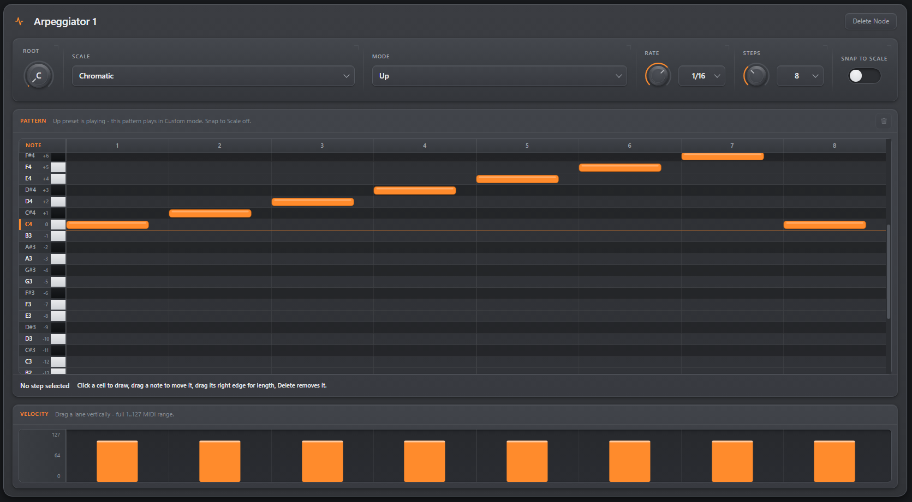
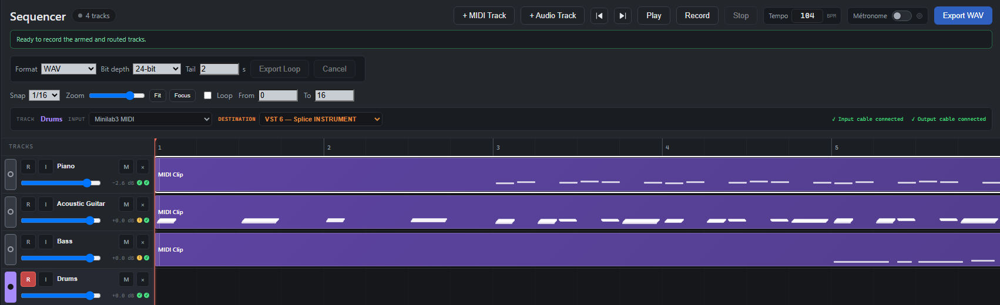
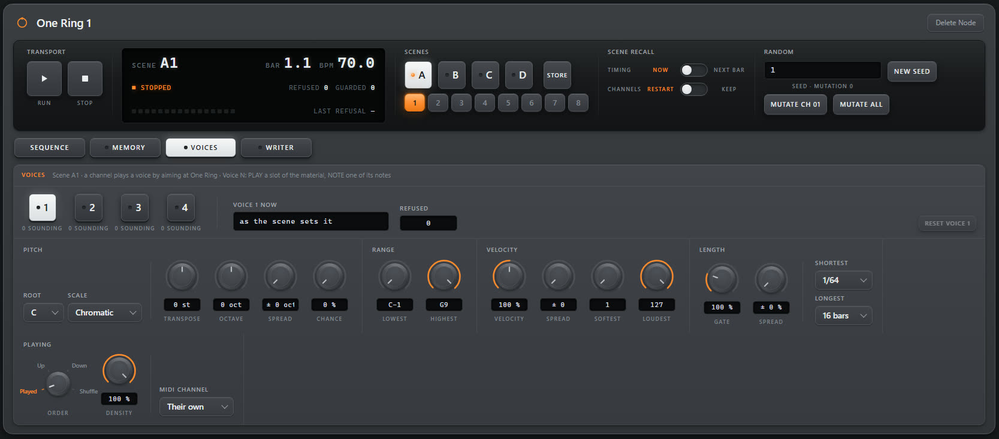
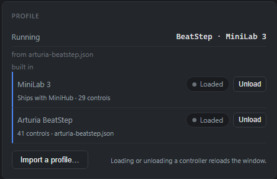

Routing
Patch Bay
Typed ports that refuse the wrong connection, cycle detection across the whole node network, and wiring that outlives every panel you open and close.
Free and open-source music workstation · Windows
MiniHub is a free, open-source music workstation for Windows, built around the Arturia MiniLab 3. Typed cables in a node-based Patch Bay — not the page you happen to be looking at — decide the signal path.
Pre-alpha 0.6.0 · installer or portable folder
The Patch Bay
Three kinds of port, three kinds of cable. A MIDI output reaches a MIDI input and nothing else. Everything you wire is one node network, and that network is what plays — not the window you happen to have open.

Patch Bay · knobs and pads reach the parameters of the plugin, the keys reach its notes, and only VST 1 makes sound
What it does
Routing
Typed ports that refuse the wrong connection, cycle detection across the whole node network, and wiring that outlives every panel you open and close.
Native engine
Serial plugin chains with native editors, plugin state saved inside the project. C++17 and JUCE on WASAPI, sample-accurate.
Arrangement
MIDI and audio tracks on one timeline, recording, a clip editor, and multi-format export that renders what you heard.
Processing
Nodes you wire like anything else. The arpeggiator carries its own instrument face — knobs and a step grid, not a form.
Generative
Sixteen channels of steps aimed at whatever its control cable reaches — rates, levels, tempo, plugin parameters — up to thirty-two scenes, one seed, and four voices that play notes from what it hears.
Hardware
Bind a physical knob or pad to a VST3 parameter. Native MIDI keeps working while the binding is made.
Live
Adding, moving and unplugging nodes never stops the audio. Generative sets are meant to be changed mid-flight, not reloaded.
Control learning
Pick a control on the MiniLab, arm learning, then touch the parameter you want it to drive. The controller is drawn as it really is — eight knobs, four faders, eight pads, two touch strips.

Control bindings · K3 selected, unmapped, waiting to be armed
Arpeggiator
Wire it between your keyboard and a VST and it plays what you hold. Six modes — Up, Down, Up / Down, As Played, Random, Custom — over eleven scales, four rates, and patterns of 4 to 32 steps. Draw in the grid while a preset is playing and you are editing your Custom pattern: the mode selector alone decides what is heard, so the one you are building never interrupts the one you are listening to.

Arpeggiator · the Up preset drawn out as eight steps, and the velocity lane under it
Native engine
The pattern is sent to the audio engine and runs on the same clock as everything else. Close the panel, open another page, unplug the editor entirely: what you wired keeps playing.
Per step
Click a cell to draw a note, drag it to move it, drag its right edge for length. Velocity is a lane you drag, across the full 1–127 MIDI range, and a step can rest or tie into the next.
Scale
Eleven scales mark the rows that belong and dim the rest, and the root is ruled across the grid. Snap to Scale rounds what you draw; with it off, every row stays as editable as before. Random takes a seed saved with the project, not one drawn at launch.
Arrangement
A track names its input and its destination; MiniHub lays the Patch Bay cable that makes it true, and says so on the track. MIDI and audio share one timeline, and the export renders what you heard.

Sequencer · one track, the two cables it created, and a WAV export
One Ring
Sixteen channels, four to sixty-four steps each, and every channel aimed at something its control cable reaches — an arpeggiator's rate, a mixer's level, a morpher's step, the Sequencer's tempo, a parameter of a plugin. Wire the node and its commands appear in the channel's list; unwire it and they go. One Ring runs in the audio engine on its own clock, started by the same Play as the rest, so what it moves keeps moving with the panel closed. And it plays notes as well as commands: what reaches its MIDI IN becomes its material, four voices play that material, and what they played goes back into the Sequencer as a track of its own.
![One Ring's sequence page: a transport reading Scene A1, bar 1.1, 70 BPM and stopped, scene buttons A to D over eight numbered slots, and a seed with Mutate beside it. Below, sixteen channels whose first seven name their targets — Arpeggiator 1 Rate, Mixer 1 Input 2 level, Morpher 1 Step 1, Sequencer Tempo, a Valhalla plugin parameter, Arpeggiator 1 Mode and Mixer 1 Master — and channel 1's steps, four rows of sixteen with the first of each row lit, under knobs for length, rate, repeat, offset, swing and humanise.](img/one-ring.avif)
One Ring · sixteen channels, each aimed at something its control cable reaches, and channel 1's steps
Per channel
Length, rate, repeats, offset, swing and humanise belong to the channel: four to sixty-four steps at 1/4 to 1/32, running once, twice, eight times or forever. Sixteen of them pull against each other instead of marching together, and each starts, stops and restarts on its own.
Per step
A step carries a fixed value, a range it draws from, or a list it picks from. Add a probability and it plays sometimes; add a condition — the first pass, the last, every other one, another channel running or not — and it waits for it. Lock a step, or only its chance or its value, and mutation leaves that alone.
Scenes
Thirty-two places, A1 to D8: store a scene, recall it now or at the next bar, with the channels restarted or left where they stand. Every random draw comes from one seed, so the same seed and the same material play the same piece; Mutate varies one channel or all of them, within what each step allows.

One Ring · a voice, its scale, its range, its velocity, and the order it reads the material in
Material
What reaches One Ring's MIDI IN — a Sequencer track aimed at it, or a controller cabled to it — is captured over one to sixteen bars and becomes its material, up to 256 notes. A MIDI clip can be loaded instead, a step of the sequence can start the capture itself, and freezing the material keeps the sequence from changing it.
Four voices
A channel aimed at a voice plays a slot of the material, or one note of it — and a voice sounds thirty-two notes at once, so the four hold a hundred and twenty-eight. Each has its own root and scale, transpose and octave, velocity and length with their spreads, the order it reads in — as played, up, down, shuffled — a density and a MIDI channel, and other steps move those rules while it plays.
The writer
A step aimed at the writer takes what the voices played over the last one to sixteen bars and writes it into the Sequencer: a new track where it was heard, playing the instrument you name, or the notes of a clip replaced or added to. With feedback on, each generation becomes what the voices play next, at most a set number of times, then it stops itself. The origin is never touched.
Any controller
MiniHub reads a setup file — what a controller sends, and where each control sits on it. Someone may have written yours already: plug the keyboard in and the setups page recognises it. If nobody has, the Builder writes that file, and it starts out knowing nothing: you show it one family at a time, turn a knob, hit a pad, and it learns what your hardware has. Calibration is the first owner's evening, not everyone's.
Measured
The message says which control moved. A click on a photo of your own keyboard says where it sits. Nothing is recognised, nothing is guessed, and no catalogue of devices is consulted.
Private
It is a backdrop to place controls on, read inside your browser and dropped when you are done. No upload, no account, no server: the page is static, like the rest of this site.
Portable
Commit the setup and a JSON file lands in your downloads. MiniHub loads it, draws your device from it, and plays through it — and published setups are the same kind of file, readable before you trust them.
Needs Web MIDI · Chrome, Edge and other Chromium browsers hear a MIDI port; Firefox and Safari do not
The approach
These are not gaps waiting to be filled. Each one is a decision, written down with its reason, and each one is what keeps the rest small enough to reason about.
src/
is exactly what runs.node:test, not a runner.%APPDATA% are
commitments, not debt. A portability layer added just in case is
refused on sight.Download · Windows 10 and 11, 64-bit
Two routes, one build, and neither is the lesser one. What you make — settings, projects, recordings, the controller setups you import — lives outside the application folder, so both routes read the same data and moving between them loses nothing.
Installer
Installs for you alone, with no administrator prompt: a Start-menu entry, a desktop shortcut if you want one, a line in Add or remove programs. Uninstalling removes the application and nothing you made.
Portable
Unzip anywhere and run MiniHub.exe. Nothing is
registered, nothing is written beside it. To update, drop the next
folder over this one.
Pre-alpha
It plays, hosts VST3 plugins, sequences and records, and it is under active development. The rough edges are listed in the release notes rather than left to be discovered.
Not code-signed, so SmartScreen will ask — More info, then Run anyway. Release notes and SHA-256 sums · Build it from source instead
It is pre-alpha, so it will break somewhere. Tell me what broke — or use Report a bug on MiniHub's own Home page, which fills your version and Windows release in for you. Anything that is not a bug goes in Discussions.
Getting started
A MiniLab 3 needs none of this past step two — its setup ships inside MiniHub. The rest is for every other controller, and it is a one-time evening: once the file exists, plugging in is all there is.
Installer or portable ZIP, from the section above — same build, your call. Windows will say it protected your PC, because the executable is not code-signed: choose More info, then Run anyway.
The installer needs no administrator prompt and puts MiniHub in
your Start menu. The ZIP wants unzipping anywhere, then
MiniHub.exe. Neither writes your settings, projects
or recordings inside the application folder, so you can change
your mind later and lose nothing.
If it is an Arturia MiniLab 3, you are done — its setup ships with MiniHub, and the Patch Bay already draws the faceplate. Any other controller needs a setup file: what it sends, and where its controls sit. That is the next step.
Open Setups, keyboard plugged in, and press Look for my keyboard: the page reads the MIDI port and tells you whether someone has already mapped your device. If so, download the file — you are done mapping.
Needs Web MIDI — Chrome, Edge or another Chromium browser.
The Builder writes that file from your own keyboard: a photo of it, then one family of controls at a time — turn a knob, hit a pad — and Commit setup drops a JSON file in your downloads. The photo never leaves your browser.
In MiniHub, open the page named after your device, find the Profile panel and press Import a profile… there. The window reloads, and from then on MiniHub draws and decodes your controller from your file.

Two controllers loaded at once · each one gets its own page
Status
One person's project, and the download above is its third public build. It also builds from source on Windows 10 and 11, with Visual Studio 2022, CMake 3.22 and Node 20 or newer. The native SDKs are fetched separately and never committed.